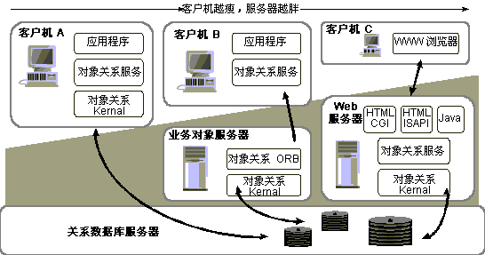
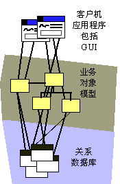
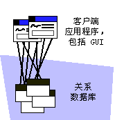
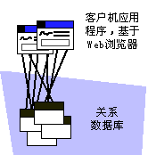

| 概念：分布模式 |
 |
|
节点、处理器和设备处理器和设备是常见的节点构造型。似乎很难评估这两者之间的区别，因为许多设备现在都包含它们自己的 CPU。 但是，处理器和设备之间仍有区别，这在于它们上面执行的软件的类型。 处理器执行的程序／软件是明确地为正在开发的系统编写的。 处理器是通用的计算设备，它具有计算容量、内存和执行能力。 设备执行为控制设备自身的功能而编写的软件。 设备通常连接到控制该设备的处理器。它们通常执行嵌入式软件，不能运行通用程序。 它们的功能通常受设备驱动程序软件的控制。 分布模式系统中存在许多典型的分发模式，它们取决于系统的功能和应用程序的类型。 在许多情况下，非正式地使用分发模式来描述系统的“体系结构”，尽管完整的体系结构不仅包含它，而且还包含许多更多的内容。 例如，许多时候系统将被描述为具有“客户机－服务器体系结构”，尽管这只是体系结构的分发方面。 这用来强调系统分发方面的重要性，以及分发方面影响其他体系结构决策的程度。 下面描述的分发模式暗示了某些系统特征、性能特征和流程体系结构。 每种模式解决某些问题，但也构成独特的挑战。 客户机／服务器体系结构在所谓的“客户机／服务器体系结构”中，有些专用的网络处理器节点称为客户机，而有些节点称为服务器。客户机是服务器提供的服务的使用者。客户机通常服务于单个用户，并经常处理最终用户的表示服务（GUI）；而服务器通常同时向数台客户机提供服务，所提供的服务通常是数据库服务、安全性服务或打印服务。 这些系统中的“应用逻辑”或业务逻辑通常分布于客户机和服务器上。业务逻辑的分布称为应用程序分区。 在下图中，客户机 A 显示了 2 层体系结构的示例，大部分应用逻辑均位于服务器中。 客户机 B 显示了典型的 3 层体系结构，其中业务服务在业务对象服务器中实施。 客户机 C 显示了典型的基于 Web 的应用程序。  客户机－服务器体系结构的变体 在传统的客户机／服务器系统中，大部分业务逻辑在客户机上实施，但一些功能更适合于位于服务器上，例如常常要访问存储在服务器上的数据的功能。这样，人们可以减少网络通信，而网络流量在大多数情况下代价是十分昂贵的（其速度要比进程间通信慢一到两个数量级）。 一些特征：
“3 层体系结构”“3 层体系结构”是“客户机／服务器体系结构”的特例，其中系统的功能分成 3 个逻辑分区：应用程序服务、业务服务和数据服务。 实际上“逻辑分区”可以映射到 3 个或更多的物理节点。  3 层体系结构的示例 逻辑被划分到这三“层”中，这一做法反映了人们对典型办公应用程序的观察结果，即这类应用程序应从哪个方向进行实施以及它如何变化。应用程序服务主要处理 GUI 表示问题，它们倾向于在带有图形化、窗口化的操作环境的专用桌面工作站中执行。 功能的更改往往受到易用性和美学方面考虑的支配，本质上是人为因素的问题。 数据服务倾向于使用数据库服务器技术来实施，该技术倾向于在一个或多个高性能、高带宽的节点上执行，这些节点连接在网络上，向几百几千的用户提供服务。 在已存信息的表示和不同已存信息之间的关系变化时，数据访问倾向于随之而变。 业务服务反映业务流程的具体编码。它们处理并合成从数据服务获取的信息，并提供给应用程序服务。 业务服务通常由许多用户共同使用，因此这些服务也倾向于位于专门的服务器上，尽管它们可以驻留在与数据服务相同的节点上。 沿着这一连串服务的分区功能，为可伸缩性提供了一个相对可靠的模式：通过添加服务器和在数据和业务服务器之间重新平衡处理，来达到更高程度的可伸缩性。 “胖客户机体系结构”之所以把客户机描述为“胖”，是因为几乎所有服务都在该客户机上运行（除了一种称为“两层体系结构”的变体，此时数据服务位于单独的节点上）。应用程序服务、业务服务和数据服务均驻留在客户机上，数据库服务器通常位于另一台机器上。  传统的 2 层或“胖客户机”体系结构 “胖客户机”的设计和构建相对简单，但却比较难以分发（它们往往既大又是整体式的）和维护。 因为客户机倾向于将数据在本地进行高速缓存以提高性能，所以本地高速缓存的一致性和相容性往往是需要引起特别关注的问题和领域。 对位于多个本地高速缓存的共享对象的变更进行协调是很困难的，且代价不菲，因为涉及到将变更通过网络进行传播。 “胖服务器体系结构”与“胖客户机”截然不同的另一面是“胖服务器”或“瘦客户机”。 典型的例子是运行一组 HTML 页面的 Web 浏览器应用程序，在客户机上几乎根本没有应用程序。 几乎所有的工作均发生在一台或多台 Web 服务器和数据服务器上。  Web 应用程序 Web 应用程序易于分发，易于变更。开发和支持它们的代价相对较低（因为应用程序基础体系结构的大部分由浏览器和 Web 服务器提供）。 不过它们可能不会提供对应用程序所需的控制级别，如果设计不佳，它们往往很快使网络饱和（有时即使设计良好也会很快使网络饱和）。 分布式客户机／服务器体系结构在这种体系结构中，应用程序服务、业务服务和数据服务驻留在不同的节点上，在业务服务层和数据服务层中的服务器均可能是专门化的。 它是 3 层体系结构的完整实现。 点对点体系结构在点对点体系结构中，系统中任何进程或节点都可以同时是客户机和服务器。 达到功能分发的方法是，将相互关联的服务分组在一起，以使网络流量最少，同时使吞吐量和系统利用率最大。 这样的系统往往很复杂，而且更需要意识到诸如死锁、进程间资源缺乏以及故障处理之类的问题。 |
© Copyright IBM Corp. 1987, 2006. All Rights Reserved. |